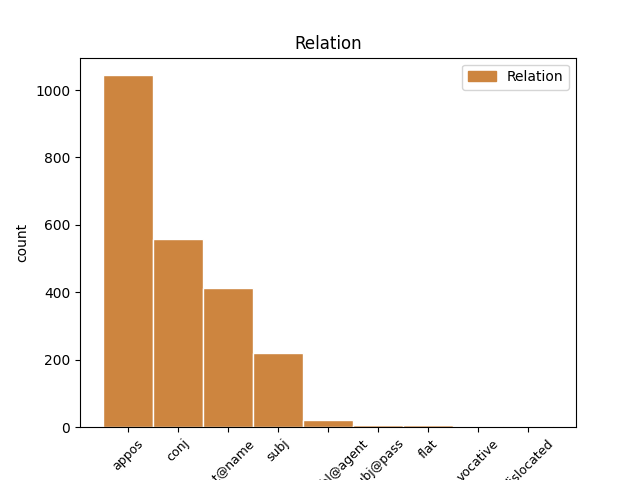
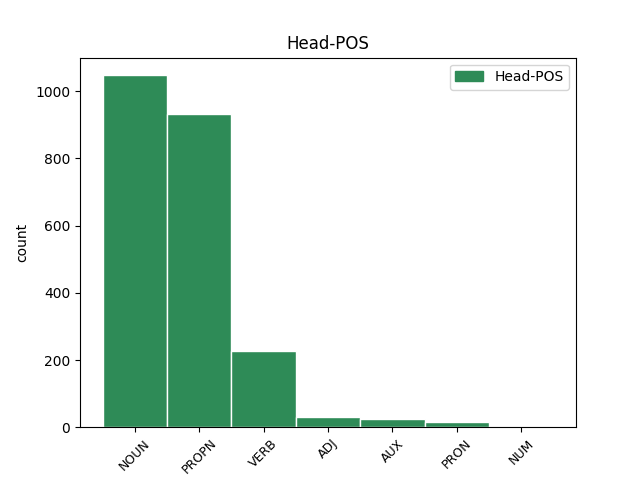
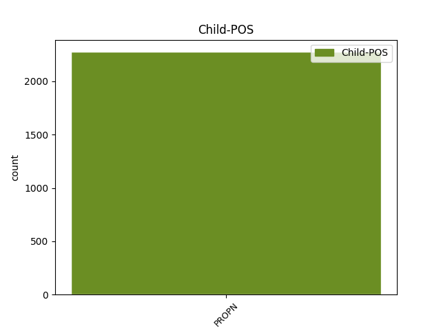

Distribution of features within this leaf



Agreement Rules sorted by frequency.
- When the dependent token is the appositional modifier(appos) of the head token, and the dependent token is PROPN.
1 Слава _ _ _ _ 0 _ _ _
2 Игорю _ _ _ _ 0 _ _ _
3 Святъславличю _ _ _ _ 0 _ _ _
4 буй _ _ _ _ 0 _ _ _
5 туру туръ NOUN Nb Case=Dat|Gender=Masc|Number=Sing 0 _ _ _
6 Всеволоду вьсеволодъ PROPN Ne Case=Dat|Gender=Masc|Number=Sing 5 appos _ ref=216
7 Владиміру _ _ _ _ 0 _ _ _
8 Игоревичу _ _ _ _ 0 _ _ _
1 Слава _ _ _ _ 0 _ _ _
2 Игорю _ _ _ _ 0 _ _ _
3 Святъславличю _ _ _ _ 0 _ _ _
4 буй _ _ _ _ 0 _ _ _
5 туру туръ NOUN Nb Case=Dat|Gender=Masc|Number=Sing 0 _ _ _
6 Всеволоду _ _ _ _ 0 _ _ _
7 Владиміру владимиръ PROPN Ne Case=Dat|Gender=Masc|Number=Sing 5 conj _ ref=216
8 Игоревичу _ _ _ _ 0 _ _ _
1 Слава _ _ _ _ 0 _ _ _
2 Игорю _ _ _ _ 0 _ _ _
3 Святъславличю _ _ _ _ 0 _ _ _
4 буй _ _ _ _ 0 _ _ _
5 туру _ _ _ _ 0 _ _ _
6 Всеволоду _ _ _ _ 0 _ _ _
7 Владиміру владимиръ PROPN Ne Case=Dat|Gender=Masc|Number=Sing 0 _ _ _
8 Игоревичу игоревичь PROPN Ne Case=Dat|Gender=Masc|Number=Sing 7 flat@name _ ref=216
1 Рекъ рещи VERB V- Case=Nom|Gender=Masc|Number=Sing|Strength=Strong|Tense=Past|VerbForm=Part|Voice=Act 0 _ _ _
2 Боянъ боянъ PROPN Ne Case=Nom|Gender=Masc|Number=Sing 1 subj _ ref=209
3 и _ _ _ _ 0 _ _ _
4 ходы _ _ _ _ 0 _ _ _
5 на _ _ _ _ 0 _ _ _
6 Святъславля _ _ _ _ 0 _ _ _
7 пѣстворца _ _ _ _ 0 _ _ _
8 стараго _ _ _ _ 0 _ _ _
9 времени _ _ _ _ 0 _ _ _
10 Ярославля _ _ _ _ 0 _ _ _
11 Ольгова _ _ _ _ 0 _ _ _
12 коганя _ _ _ _ 0 _ _ _
13 хоти _ _ _ _ 0 _ _ _
1 тоже _ _ _ _ 0 _ _ _
2 тако _ _ _ _ 0 _ _ _
3 повелѣвъшȣ повелѣти VERB V- Case=Dat|Gender=Masc|Number=Sing|Strength=Strong|Tense=Past|VerbForm=Part|Voice=Pass 0 _ _ _
4 никонѹ никонъ PROPN Ne Case=Dat|Gender=Masc|Number=Sing 3 subj@pass _ ref=40
5 по _ _ _ _ 0 _ _ _
6 обычаю _ _ _ _ 0 _ _ _
7 творити _ _ _ _ 0 _ _ _
8 келарю _ _ _ _ 0 _ _ _
9 ѡнъ _ _ _ _ 0 _ _ _
10 же _ _ _ _ 0 _ _ _
11 прѣслѹшанию _ _ _ _ 0 _ _ _
12 творѧ _ _ _ _ 0 _ _ _
13 сълъга _ _ _ _ 0 _ _ _
14 рекыи _ _ _ _ 0 _ _ _
15 ꙗко _ _ _ _ 0 _ _ _
1 Рекъ _ _ _ _ 0 _ _ _
2 Боянъ _ _ _ _ 0 _ _ _
3 и _ _ _ _ 0 _ _ _
4 ходы ходына PROPN Ne Case=Nom|Gender=Masc|Number=Sing 0 _ _ _
5 на на PROPN Ne Case=Nom|Gender=Masc|Number=Sing 4 flat _ ref=209
6 Святъславля _ _ _ _ 0 _ _ _
7 пѣстворца _ _ _ _ 0 _ _ _
8 стараго _ _ _ _ 0 _ _ _
9 времени _ _ _ _ 0 _ _ _
10 Ярославля _ _ _ _ 0 _ _ _
11 Ольгова _ _ _ _ 0 _ _ _
12 коганя _ _ _ _ 0 _ _ _
13 хоти _ _ _ _ 0 _ _ _
1 и _ _ _ _ 0 _ _ _
2 снѧша _ _ _ _ 0 _ _ _
3 сѧ _ _ _ _ 0 _ _ _
4 оу _ _ _ _ 0 _ _ _
5 переяславлѧ _ _ _ _ 0 _ _ _
6 игорь игорь PROPN Ne Case=Nom|Gender=Masc|Number=Sing 0 _ _ _
7 съ _ _ _ _ 0 _ _ _
8 двѣма _ _ _ _ 0 _ _ _
9 с҃нома _ _ _ _ 0 _ _ _
10 из _ _ _ _ 0 _ _ _
11 новагорода _ _ _ _ 0 _ _ _
12 сѣверьскаго _ _ _ _ 0 _ _ _
13 ис _ _ _ _ 0 _ _ _
14 трубѣча _ _ _ _ 0 _ _ _
15 всеволодъ вьсеволодъ PROPN Ne Case=Nom|Gender=Masc|Number=Sing 6 dislocated _ ref=true
16 брата _ _ _ _ 0 _ _ _
17 ѥго _ _ _ _ 0 _ _ _
18 ѡлговичь _ _ _ _ 0 _ _ _
19 с҃тославъ _ _ _ _ 0 _ _ _
20 из _ _ _ _ 0 _ _ _
21 рыльска _ _ _ _ 0 _ _ _
22 и _ _ _ _ 0 _ _ _
23 черниговьская _ _ _ _ 0 _ _ _
24 помочь _ _ _ _ 0 _ _ _
Disagree Examples:
1 за _ _ _ _ 0 _ _ _
2 млт҃вѹ _ _ _ _ 0 _ _ _
3 ст҃хъ _ _ _ _ 0 _ _ _
4 ѡц҃ь _ _ _ _ 0 _ _ _
5 наших _ _ _ _ 0 _ _ _
6 г҃и _ _ _ _ 0 _ _ _
7 їс҃е _ _ _ _ 0 _ _ _
8 х҃е _ _ _ _ 0 _ _ _
9 сн҃е _ _ _ _ 0 _ _ _
10 бж҃їи _ _ _ _ 0 _ _ _
11 помилѹи _ _ _ _ 0 _ _ _
12 мѧ азъ PRON Pp Case=Acc|Gender=Masc|Number=Sing|Person=1|PronType=Prs 0 _ _ _
13 раба _ _ _ _ 0 _ _ _
14 своего _ _ _ _ 0 _ _ _
15 грѣш꙽наго _ _ _ _ 0 _ _ _
16 афонасьѧ афонасии PROPN Ne Case=Gen|Gender=Masc|Number=Sing 12 appos _ ref=1
17 микитина _ _ _ _ 0 _ _ _
18 сна _ _ _ _ 0 _ _ _
1 в _ _ _ _ 0 _ _ _
2 бедери _ _ _ _ 0 _ _ _
3 же _ _ _ _ 0 _ _ _
4 их и PRON Pp Case=Gen|Gender=Masc|Number=Plur|Person=3|PronType=Prs 0 _ _ _
5 столъ _ _ _ _ 0 _ _ _
6 гѹндѹстанꙋ гондустанъ PROPN Ne Case=Dat|Gender=Masc|Number=Sing 4 appos _ ref=10
7 бесерменьскомѹ _ _ _ _ 0 _ _ _
1 словѣномъ _ _ _ _ 0 _ _ _
2 жиоущимъ _ _ _ _ 0 _ _ _
3 кр҃щнмъ _ _ _ _ 0 _ _ _
4 и _ _ _ _ 0 _ _ _
5 кнѧземъ _ _ _ _ 0 _ _ _
6 ихъ _ _ _ _ 0 _ _ _
7 ростиславъ _ _ _ _ 0 _ _ _
8 и _ _ _ _ 0 _ _ _
9 стпкъ _ _ _ _ 0 _ _ _
10 и _ _ _ _ 0 _ _ _
11 коцелъ _ _ _ _ 0 _ _ _
12 послаша _ _ _ _ 0 _ _ _
13 ко _ _ _ _ 0 _ _ _
14 ц҃рю цѣсарь NOUN Nb Case=Dat|Gender=Masc|Number=Sing 0 _ _ _
15 михаилу михаилъ PROPN Ne Case=Nom|Gender=Masc|Number=Sing 14 appos _ ref=26.7
16 гл҃ще _ _ _ _ 0 _ _ _
1 посли _ _ _ _ 0 _ _ _
2 к _ _ _ _ 0 _ _ _
3 намъ _ _ _ _ 0 _ _ _
4 въскорѣ _ _ _ _ 0 _ _ _
5 с҃на сынъ NOUN Nb Case=Acc|Gender=Masc|Number=Dual 0 _ _ _
6 своя _ _ _ _ 0 _ _ _
7 мефодия мефодии PROPN Ne Case=Gen|Gender=Masc|Number=Sing 5 appos _ ref=26.22
8 и _ _ _ _ 0 _ _ _
9 костѧнтина _ _ _ _ 0 _ _ _
1 въ _ _ _ _ 0 _ _ _
2 лѣт _ _ _ _ 0 _ _ _
3 ҂ѕ҃ _ _ _ _ 0 _ _ _
4 т҃ _ _ _ _ 0 _ _ _
5 п҃ _ _ _ _ 0 _ _ _
6 з҃ _ _ _ _ 0 _ _ _
7 оумершю _ _ _ _ 0 _ _ _
8 рюрикови _ _ _ _ 0 _ _ _
9 предасть _ _ _ _ 0 _ _ _
10 кнѧнье _ _ _ _ 0 _ _ _
11 свое _ _ _ _ 0 _ _ _
12 ѡлгови _ _ _ _ 0 _ _ _
13 ѿ _ _ _ _ 0 _ _ _
14 рада _ _ _ _ 0 _ _ _
15 имъ _ _ _ _ 0 _ _ _
16 суща _ _ _ _ 0 _ _ _
17 въдавъ _ _ _ _ 0 _ _ _
18 ему _ _ _ _ 0 _ _ _
19 с҃нъ сынъ NOUN Nb Case=Acc|Gender=Masc|Number=Sing 0 _ _ _
20 свои _ _ _ _ 0 _ _ _
21 на _ _ _ _ 0 _ _ _
22 руцѣ _ _ _ _ 0 _ _ _
23 игорѧ игорь PROPN Ne Case=Gen|Gender=Masc|Number=Sing 19 appos _ ref=22.20